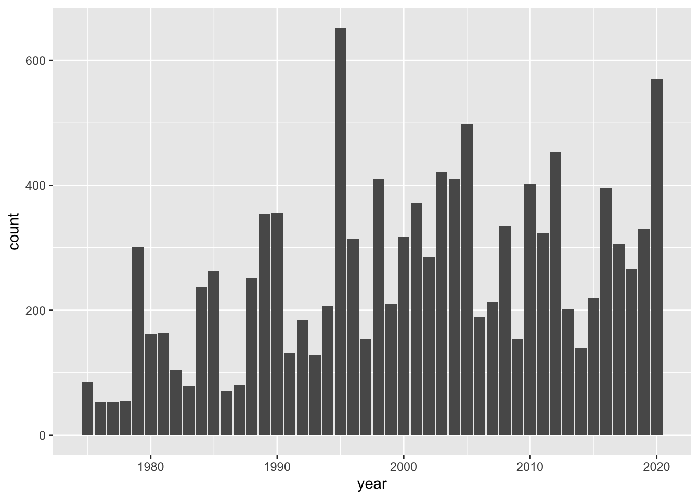
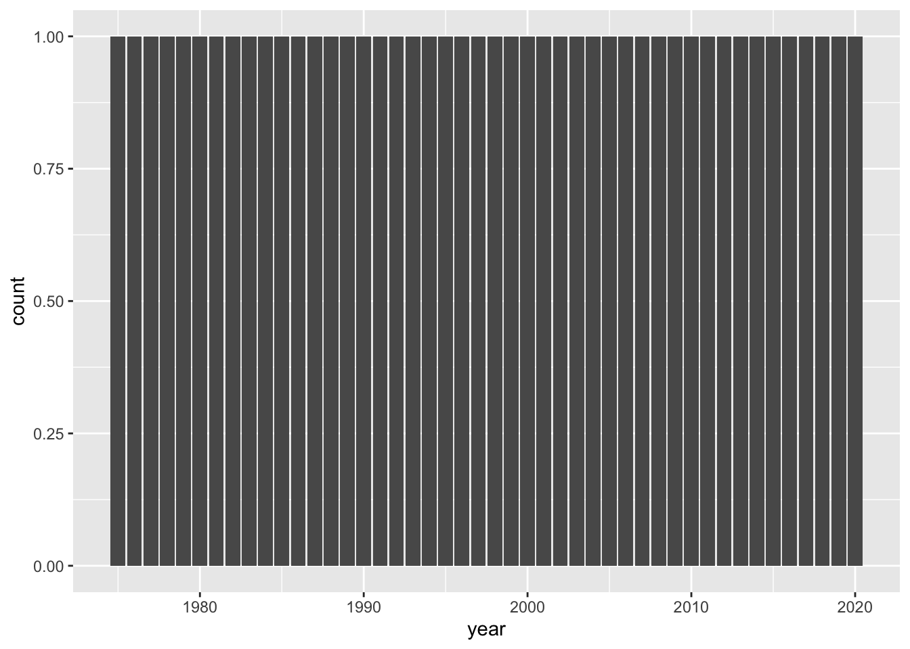
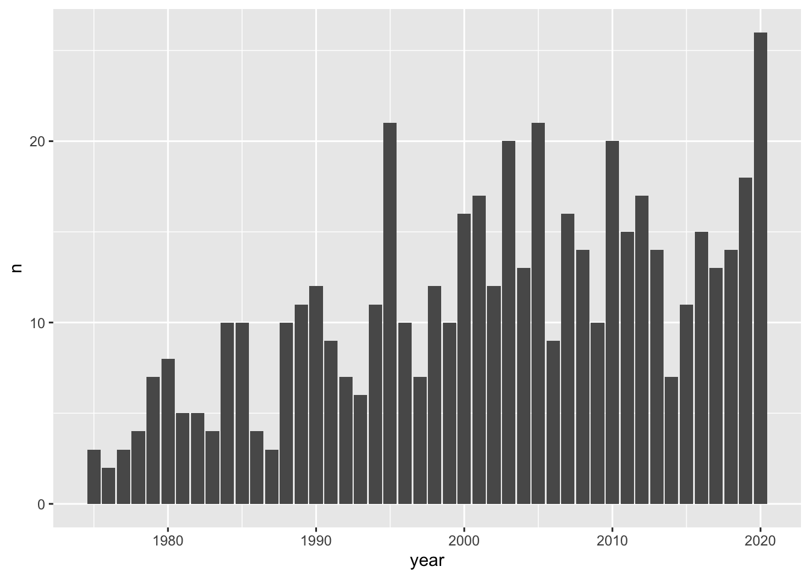
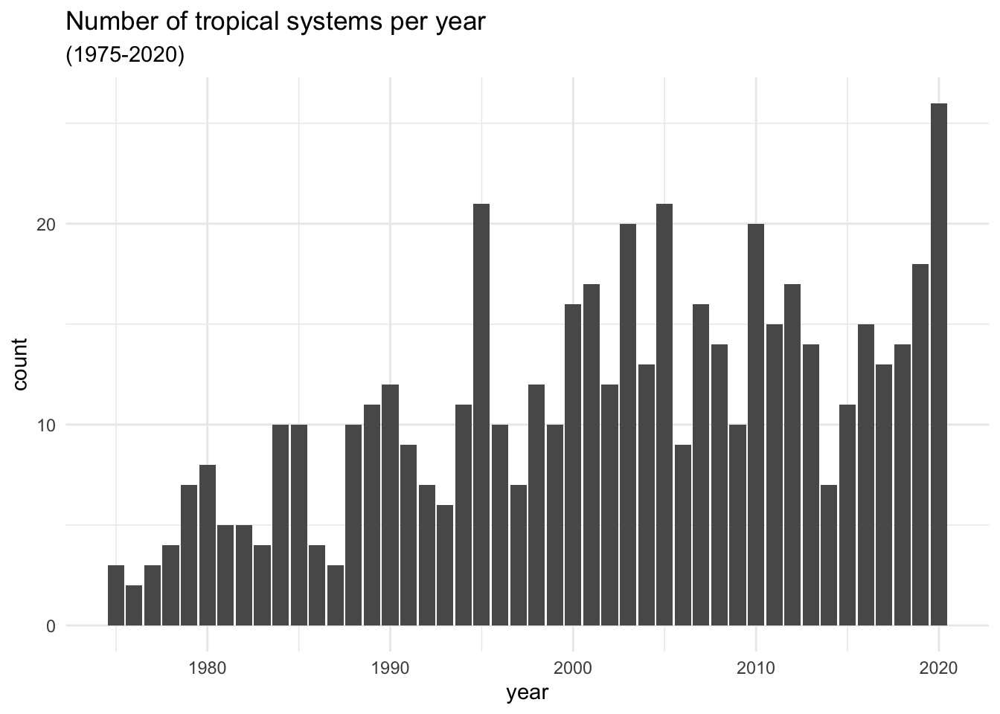
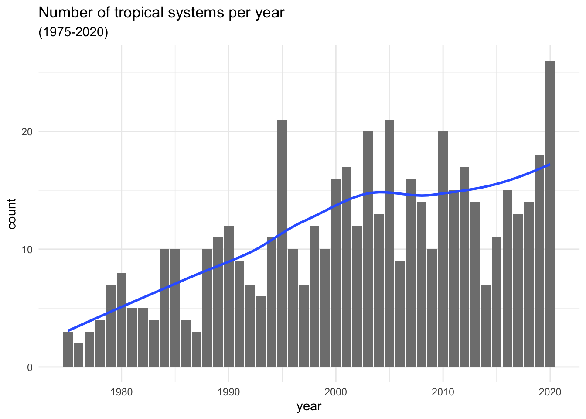

13 Visualizing Number of Systems
We ended the preceding chapter with the following command that allows us to get the number of tropical systems in each year from 1975 to 2020:
system_counts_per_year <- storms %>%
count(year, name) %>%
count(year)
system_counts_per_year## # A tibble: 46 × 2
## year n
## <dbl> <int>
## 1 1975 3
## 2 1976 2
## 3 1977 3
## 4 1978 4
## 5 1979 7
## 6 1980 8
## 7 1981 5
## 8 1982 5
## 9 1983 4
## 10 1984 10
## # … with 36 more rowsLet’s now talk about how to use "ggplot2" functions to obtain a data
visualization of the above frequencies.
13.1 Barcharts
In chapter 4, we created a basic barchart of all year values. To be more
precise, we obtained a barchart based on all the entries for each given year
by invoking the command shown below:
# from chapter 4: barchart of year values
ggplot(data = storms) +
geom_bar(aes(x = year))
As you can tell, the geometric object (geom) function that is used in this
case is geom_bar(). This function, by default, does its own computation—via
stat_count()—to get the counts or frequencies.
13.1.1 Barchart with geom_bar()
It feels very tempting and natural to use the same "ggplot2" functions of
the preceding command in order to create a bar-plot for the number of tropical
systems in each year. After all, this is exactly the type of chart we want to
produce. So why not using geom_bar()? Let’s try this out.
# doesn't work as expected
ggplot(data = system_counts_per_year) +
geom_bar(aes(x = year))
Ooops!
What is going on with this graphic? Why do all bars have the same height? And why the y-axis has a count scale from 0 to 1? This doesn’t make any sense.
Well, the explanation has to do with the technical fact that, as we just said,
by default geom_bar() does its own tally of year values.
Because the table system_counts_per_year already has the frequencies in
column n, we need to tell geom_bar() to not count anything. This is done
by adding a y argument to the aesthetic mapping function aes(), and also
by setting the argument stat = "identity"
# this works
ggplot(data = system_counts_per_year) +
geom_bar(aes(x = year, y = n), stat = "identity")
13.1.2 Barchart with geom_col()
Often, there is more than one way to obtain a given output or a given graphic.
Interestingly, in this case we can also get a barchart with the geom_col()
function. This is a sibling function of geom_bar(stat = "identity"), designed
to be used for tables of frequencies, like system_counts_per_year:
# another way to get a barchart, given a table of frequencies
ggplot(data = system_counts_per_year) +
geom_col(aes(x = year, y = n))Looking at the chart, there are some fairly tall bars. Although it’s hard
to see exactly which years have a considerably large number of tropical systems,
eyeballing things out it seems that around 1995, 2005, and 2020 there are
20 or more storms. We can find the actual answer by using arrange(),
specifying the counts to be shown in descending order—with desc():
arrange(system_counts_per_year, desc(n))## # A tibble: 46 × 2
## year n
## <dbl> <int>
## 1 2020 26
## 2 1995 21
## 3 2005 21
## 4 2003 20
## 5 2010 20
## 6 2019 18
## 7 2001 17
## 8 2012 17
## 9 2000 16
## 10 2007 16
## # … with 36 more rowsAs you can tell, in the 45-year period from 1975 to 2020, the top three years by number of systems correspond to 2020, 1995 and 2005.
13.2 Customizing a Barchart
For illustration purposes, let’s further customize the bar plot by adding a
title, a more descriptive y-axis label, a simple background theme, and things
like that. For instance, the function labs() can be used to customize a
title, a subtitle, as well as axis labels. Likewise, the theme_minimal()
function provides a simplified background theme that, in my opinion, gives a
neat look to the graphic.
ggplot(data = system_counts_per_year) +
geom_col(aes(x = year, y = n)) +
labs(title = "Number of tropical systems per year",
subtitle = "(1975-2020)",
y = "count") +
theme_minimal()
13.2.1 Global versus Local Aesthetic Mappings
An equivalent way to get the above plot can be obtained if we move the mapping
aes() inside ggplot().
ggplot(data = system_counts_per_year, aes(x = year, y = n)) +
geom_col() +
labs(title = "Number of tropical systems per year",
subtitle = "(1975-2020)",
y = "count") +
theme_minimal()Relocating the mapping command aes() may seem a bit whimsical. What difference
it makes if we place aes() inside ggplot() versus if we place it inside
geom_col()? It turns out that there is an important difference. Any mapping
done at the level of ggplot() is considered to be a global mapping in the
sense that this cascades down to any additional layer, such as geom_col().
In contrast, any mapping done at the level of a geom_...() function or any
other layer function acts as a local mapping, only affecting that particular
type of geometric object.
To further illustrate the effect of aes(), let’s add a smoother to highlight
the increasing trend that the number of storms have experienced in the
visualized period of time. To do this, we add a new layer using stat_smooth()
with arguments method = "loess" and se = FALSE
ggplot(data = system_counts_per_year, aes(x = year, y = n)) +
geom_col(fill = "gray50") +
stat_smooth(method = "loess", se = FALSE) +
labs(title = "Number of tropical systems per year",
subtitle = "(1975-2020)",
y = "count") +
theme_minimal()
The argument method = "loess" uses a non-linear smoother; in turn,
se = FALSE prevents the standard error ribbon from being plotted.
Observe also that the fill color of the bars has been changed to a less
darker gray in order to better distinguish the blue smoother.
Compare the above command with the following one in which the aesthetic
mapping aes(x = year, y = n) is done at the geom_col() level:
# error
ggplot(data = system_counts_per_year) +
geom_col(aes(x = year, y = n), fill = "gray50") +
stat_smooth(method = "loess", se = FALSE) +
labs(title = "Number of tropical systems per year",
subtitle = "(1975-2020)",
y = "count") +
theme_minimal()## `geom_smooth()` using formula 'y ~ x'## Error in `check_required_aesthetics()`:
## ! stat_smooth requires the following missing aesthetics: x and yOh no! Houston, we have a problem.
Every time you get an error message, do the following two things:
First, don’t panic,
Second, read the error message.
As you can tell, the error indicates that stat_smooth() requires missing
aesthetics: x and y.
You may argue that those statistics, x and y, are already specified in aes(),
inside geom_col(). And you are correct. But this is precisely the issue.
Those aesthetics only work for geom_col(), not for stat_smooth(). One
option to fix this problem is by including the same mapping into stat_smooth()
# fixing the error
ggplot(data = system_counts_per_year) +
geom_col(aes(x = year, y = n), fill = "gray50") +
stat_smooth(aes(x = year, y = n), method = "loess", se = FALSE) +
labs(title = "Number of tropical systems per year",
subtitle = "(1975-2020)",
y = "count") +
theme_minimal()While this fixes the problem, we’ve introduced unnecessary duplication into our
code. Why? Because the mapping command aes(x = year, y = n) appears in two
different places. A better option is to simply use one call to aes() at the
top ggplot()level. In this form the mapping propagates to both geom_col()
and stat_smooth()
# getting rid of the duplicated piece of code
ggplot(data = system_counts_per_year, aes(x = year, y = n)) +
geom_col(fill = "gray50") +
stat_smooth(method = "loess", se = FALSE) +
labs(title = "Number of tropical systems per year",
subtitle = "(1975-2020)",
y = "count") +
theme_minimal()